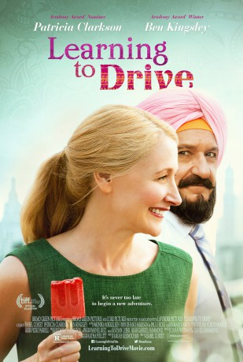

#9146 Learning to Drive - Fahrstunden fürs Leben
Alternativ: Learning to Drive
 
 IMDB-Wertung: 6.4 / 10
IMDB-Wertung: 6.4 / 10  Metascore: 0
Metascore: 0 
Wendy (Patrician Clarkson), a self-absorbed New York book critic, is shocked to reality by the sudden end of her marriage. Always dependent on her husband for driving, she must now learn to take the wheel on her own. Her instructor Darwan (Ben Kingsley) is a Sikh Indian who watches with alarm as his pupil falls apart at the seams. He himself is contemplating an arranged marriage with a woman he has never met. As these two lives intersect, both will change in unpredictable ways.
Jahr: 2014
Dauer: 86 Minuten
FSK: 0
Land: England Studio: Alamode FilmTonspuren: DTS - ,
Untertitel:
Auflösung: 1080p (1920x1040) Größe: 6307 MB
Genre: Drama, Komödie, Liebe
Regisseur: Isabel Coixet
Drehbuch: Katie Anne Naylon
Soundtrack: Dhani Harrison, Paul Hicks
Darsteller:
 Patricia Clarkson als Wendy
Patricia Clarkson als Wendy Ben Kingsley als Darwan
Ben Kingsley als Darwan Jake Weber als Ted
Jake Weber als Ted Sarita Choudhury als Jasleen
Sarita Choudhury als Jasleen Grace Gummer als Tasha
Grace Gummer als Tasha- Avi Nash als Preet
 Samantha Bee als Debbie
Samantha Bee als Debbie John Hodgman als Car Salesman
John Hodgman als Car Salesman Michael Mantell als Wendy's Dad
Michael Mantell als Wendy's Dad Daniela Lavender als Mata
Daniela Lavender als Mata- Gina Jarrin als Paige
- Rajika Puri als Darwan's Sister Rasbir
- Randy Graff als Divorce Attorney
 Bryan Burton als Student Driver
Bryan Burton als Student Driver Mike Massimino als Hothead Crash Driver
Mike Massimino als Hothead Crash Driver- Patrick Brana als Crash Passenger
- Justin Gregory Lopez als Loudmouth Kid
- Anna Itty als Sikh Woman
- Amelia Fowler als Dollar Store Clerk
 David Boston als Passing Motorist (uncredited)
David Boston als Passing Motorist (uncredited)- Joan Juliet Buck als Ruth (uncredited)
- Shawn Michael als ICE Agent (uncredited)
- Jessie Nagpal als Friend of Mata (uncredited)
- Matt Salinger als Peter
- Beau Baxter als Debbie's Husband
- Sean Cole als Radio Host
- Royce Johnson als Cop
- Nora Hummel als Driving Examiner
- Lorri Lindberg als Real Estate Broker
- Jonathan C. Kaplan als ICE Agent
- Harpreet Singh Toor als Priest
- Hervender Singh als Darwan's Friend
- Raf Liriano als Tough Kid #2 (uncredited)
Datei: X:\2014(G-M)\Learning to Drive - Fahrstunden fürs Leben (2014, FSK0, 1920x1040).mkv seit 19.07.2018
Festplatte: HD 2013(I-Z)-2014(A-Z)
 Es gibt insgesamt 136 Filme in der Gruppe '2014(G-M)'
Es gibt insgesamt 136 Filme in der Gruppe '2014(G-M)'